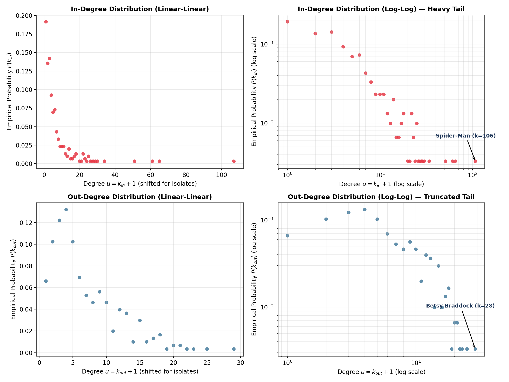
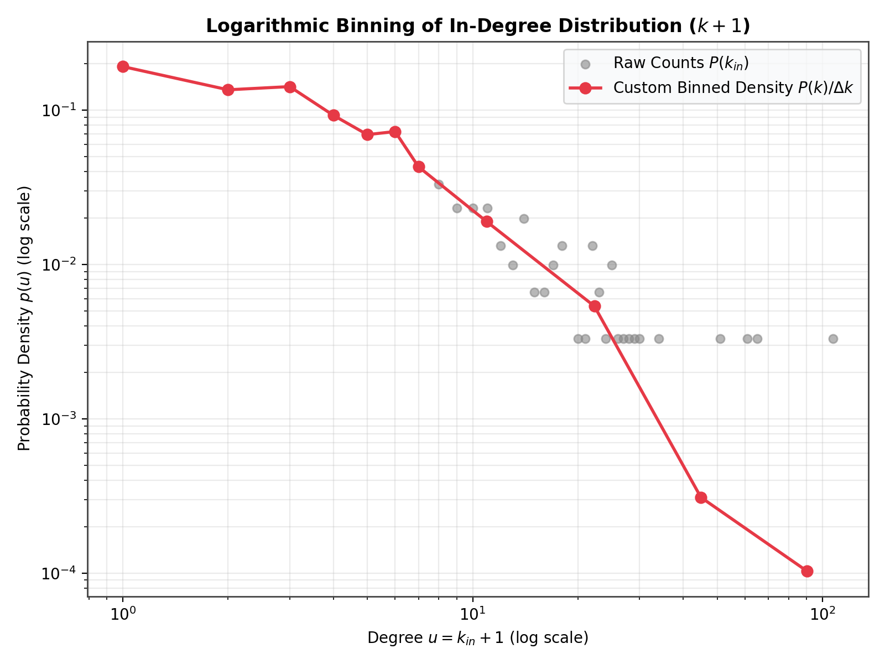
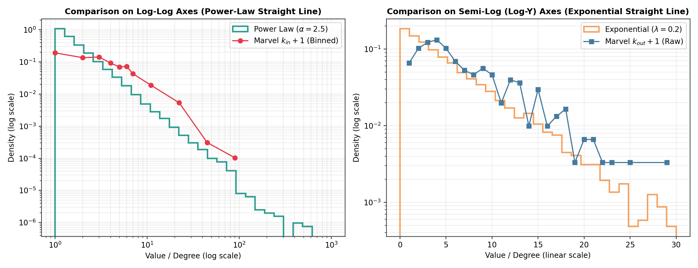
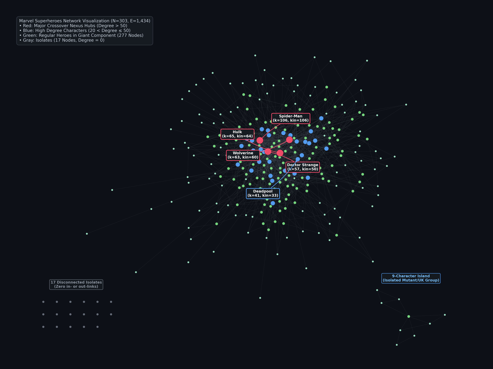

1. The Representation & The Playground
Welcome to our public group journal for 02805 Social Graphs and Complex Networks! This week we kicked off the semester by diving into the Wikipedia Marvel Comics Superheroes Network.
Before running any calculations, network science asks a fundamental question: What are the nodes and what are the edges? Here, each node represents a Wikipedia article for a Marvel superhero (from the official category snapshot), and a directed edge \(A \to B\) exists if character \(A\)'s page contains an internal wikilink pointing to character \(B\)'s page.
When constructing the network from the edge list, 17 of the 303 characters have no incoming or outgoing connections. If one simply loads the edges, these loners vanish! We ensured all 303 nodes from week1_nodes.tsv were inserted first, guaranteeing an exact snapshot where \(N=303\), \(E_{\text{dir}}=1{,}784\), and the isolates are preserved.
| Network Property | Directed View (\(G_{\text{dir}}\)) | Undirected View (\(G_{\text{undir}}\)) | Interpretation |
|---|---|---|---|
| Node Count (\(N\)) | 303 | 303 | Total Marvel heroes cataloged |
| Edge Count (\(E\)) | 1,784 directed links | 1,434 distinct pairs | 350 links are reciprocal (\(A \leftrightarrow B\)) |
| Average Degree \(\langle k \rangle\) | \(\langle k_{\text{in}}\rangle = \langle k_{\text{out}}\rangle = 5.89\) | \(\langle k \rangle = 2E/N \approx 9.47\) | Average connections per superhero |
| Network Density | \(1{,}784 / (303 \times 302) \approx 1.95\%\) | \(1{,}434 / [303 \times 302 / 2] \approx 3.13\%\) | Sparse network: ~97% of possible ties do not exist |
| Giant Component | 277 nodes (91.4%) | 277 nodes (91.4%) | Main connected superhero universe |
| Islands & Isolates | 1 island of 9 nodes, 17 isolates | 1 island of 9 nodes, 17 isolates | Disconnected subcultures (e.g. British heroes) |
2. Who is Famous vs. Who is a List: In- vs. Out-Degree
One of the most profound insights from Week 1 is the asymmetry of directed networks. Every directed edge has an author and an recipient:
- In-degree (\(k_{\text{in}}\)) is conferred by other pages. It reflects collective cultural centrality: other Wikipedia editors independently deciding that a hero is indispensable to their article's context. In-degree has no natural ceiling.
- Out-degree (\(k_{\text{out}}\)) is authored locally. An editor sits down and writes hyperlinks on that specific character's page. Human editorial patience and article readability impose a hard ceiling.
| Rank | Character | In-Degree (\(k_{\text{in}}\)) | Shifted \(k_{\text{in}}+1\) | Significance |
|---|---|---|---|---|
| 1 | Spider-Man | 106 | 107 | Referenced by over 35% of all Marvel pages |
| 2 | Hulk | 64 | 65 | Core Avenger & universal crossover presence |
| 3 | Wolverine | 60 | 61 | Bridge between X-Men and mainstream Avengers |
| 4 | Doctor Strange | 50 | 51 | Occult & mystical crossover nexus |
| 5 | Deadpool | 33 | 34 | Modern meta-cultural popularity |
| Rank | Character | Out-Degree (\(k_{\text{out}}\)) | Shifted \(k_{\text{out}}+1\) | Significance |
|---|---|---|---|---|
| 1 | Betsy Braddock (Psylocke) | 28 | 29 | Exhaustive team roster mentions across X-Men/Excalibur |
| 2 | Cloak and Dagger | 24 | 25 | Extensive team-up history with NYC street-level heroes |
| 3 | Adam Warlock | 22 | 23 | Cosmic storylines linking Infinity Watch characters |
| 4 | Venom | 21 | 22 | Links to extensive Symbiote universe & Spider-family |
| 5 | She-Hulk | 20 | 21 | Legal casework involving dozens of superhero clients |

3. Logarithmic Binning: Revealing the Power Law
Real degree distributions are notoriously noisy in their tails. At high degrees, every count is either 0 or 1—a solitary Spider-Man sits at \(k=106\), with zeros at \(k=105\) and \(k=107\). Since a logarithmic axis cannot represent zero (\(\log(0) = -\infty\)), raw tail data appears fragmented and deceptively drops off.
Following Sune Lehmann's Goodies specification, we implemented the standardized logarithmic binning algorithm:
- Width-1 bins for low degrees (\(k+1 \in [1, 7]\)), where data is dense and unaggregated.
- Exponentially doubling bins thereafter: \([8, 16)\), \([16, 32)\), \([32, 64)\), \([64, 128)\).
- Width normalization: Raw bin counts are divided by the bin width \(\Delta k\) to yield a true probability density \(p(k) = \frac{\text{count}}{N \cdot \Delta k}\).
- Geometric mean placement: Each bin point is centered at the geometric mean \(\sqrt{k_{\text{low}} \cdot (k_{\text{high}} - 1)}\), ensuring proper alignment on a logarithmic scale.

4. Two Mathematical Specimens: Power Law vs. Exponential
To calibrate our intuition, we drew 10,000 synthetic samples from two canonical distributions:
- Power Law (\(P(k) \propto k^{-\gamma}\)): Straightens out exclusively on Log–Log coordinates.
- Exponential (\(P(k) \propto e^{-\lambda k}\)): Straightens out exclusively on Semi-Log (Log-Y) coordinates.

5. Visualizing the Universe & The 9-Character Island
Visualizing the network using a force-directed layout brings the abstract matrices to life. The vast majority of heroes (277 nodes, 91.4%) coalesce into a single Giant Connected Component.
However, floating apart from the main swarm is an intriguing isolated component of 9 characters:
- A localized pocket of British / Excalibur / specialized mutant lore characters who interconnect with each other but lack hyperlinks to mainstream Marvel universe heroes.
- Additionally, 17 isolated nodes exist completely detached from any other page in the category snapshot.

6. Group Reflection: What Surprised Us?
1. Spider-Man's sheer dominance: With an in-degree of 106, Peter Parker is cited by more than 1 in every 3 Marvel characters. He acts as the narrative glue of the Marvel universe.
2. The Out-Degree Disconnect: We expected major Avengers like Iron Man or Captain America to lead both lists. Instead, obscure or multi-team characters like Betsy Braddock and Cloak & Dagger dominate out-degrees simply because their articles catalog long, detailed rosters of allies and enemies.
3. The Fragility of Isolates: Handling tabular data without explicit isolate checks silently erases 17 superheroes. In network science, what doesn't connect is often as instructive as what does.